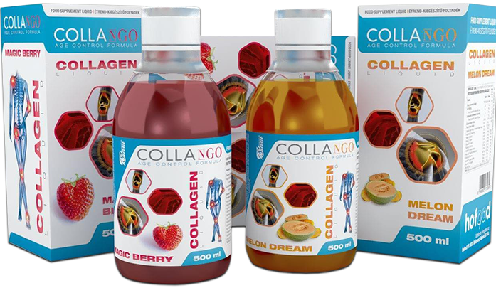

©Bartos és Gyuris Kft.
A kollagén szervezetünk elsődleges kötőszövete, valamit egy kulcsfontosságú fehérjéje, amely biztosítja a bőr, a porcok és a csontok kohézióját, rugalmasságát. Szerkezeti építőeleme továbbá a kötőszöveteknek, hajnak, körömnek, ínaknak, izmoknak, ízületi porcoknak. Bőrünk 75%-át, szervezetünk összfehérje tömegének pedig 30%-át kollagén alkotja. Az idő előrehaladtával szervezetünk kollagén termelődése lelassul, majd lecsökken és végül teljesen eláll. A Peptan® I-es tipusú hidrolizált kollagén megegyezik az emberi szervezet által termelt kollagénnel. Így amikor elfogyasztjuk, a szervezet sajátjaként ismeri fel és hasznosítja. A kollagén hasznosulása szempontjából mire kell figyelni kollagén készítmény választáskor? Hidrolizált kollagén legyen. A hidrolízis folyamán a kollagén molekula láncok az emberi szervezet által könnyen emészthetővé és hasznosíthatóvá válnak. Minél magasabb hatóanyag tartalommal rendelkezzen. A kutatási eredmények jelentős többsége általában napi 5.000- 10.000mg kollagén fogyasztásán alapszanak. C-vitamint is tartalmazzon, ami hozzájárul a kollagén hasznosulásához és serkenti szervezetünk kollagén termelését. Visszajelzések alapján a következőkben mutatkozott jótékony hatással: ízületi problémák, illetve ezzel járó fájdalom csökkenése bőr hidratáltág, mimikai ráncok kisimulása nyugodtabb alvás (a természetes előforduló magas glicin tartalma miatt) csontritkulásban szenvedőknek sportolóknál extrém megterhelés mellett az ízületek védelme. Most ezt egy kicsit felturbóztuk és előkészítettük, hogy neked már ne kelljen. Mit kell tudni a Collango Collagen Liquid -ről? 10.000mg (10g) hidrolizált marha kollagént tartalmaz adagonként 200mg C-vitamin/adag 30mg hialuronsav/adag 40µg folsv/adag B1, B2, B3, B5, B6,B7,B12 vitaminok/adag Hozzáadott cukrot nem tartalmaz Allergéneket nem tartalmaz Két megúnhatatlan ízben: Magic Berry (erdei szamóca), Melon Dream (sárgadinnye csipetnyi mangóval) Minden doboz tartalmaz egy mérőkupkot a könnyű adagolásért Hígítatlanul és hígítva egyaránt fogyasztható Egy flakon 500ml, 20 adagot tartalmaz Felbontás után hűtőben tartandó! Sokszor találkoztunk olyan kérdésekkel, hogy a folyadék vagy a por a jobb. Nem értettük a kérdést, hiszen a port is feloldod valamilyen folyadékba mielőtt elfogyasztod, nem? A kész folyadék kényelmesebb. Ez biztos. Van-e hátránya? Igen. Felbontás után hűtőben kell tárolni. Ez az egy. Nincs több! A méltán népszerű 1-es típusú hidrolizált kollagént használtuk alapanyagul. Ehhez adtunk még adagonként 30mg hialuronsavat, 200mg c- vitamint, hogy segítse a kollagén felszívódást és hasznosulását, illetve egy kis vitamin mixet, mely tartalmaz egy B komplexet (B1, B2, B3, B5, B6, B7, B12), kis folsavat és egy kis E vitamint is. Ízekben álmodtunk, majd „varázsoltunk”. Így lett az egyik testvér Magic Berry, az erdei szamóca friss ízével, természetes aromával és színezékkel, illetve a másik testvér, Melon Dream, az üde sárgadinnye fantasztikus ízével, melyet egy csipetnyi mangóval fűszereztünk, hogy az íze még álomszerűbb legyen. Tápanyag táblázat Kollagén és hialuronsav, valamint C és B vitamin komplexet tartalmazó, természetes eredetű édesítőszerrel készült termék.